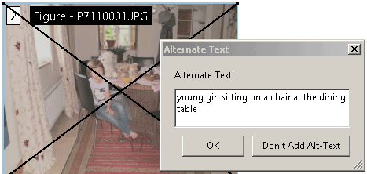
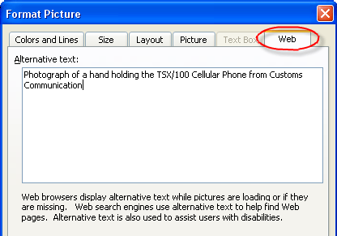
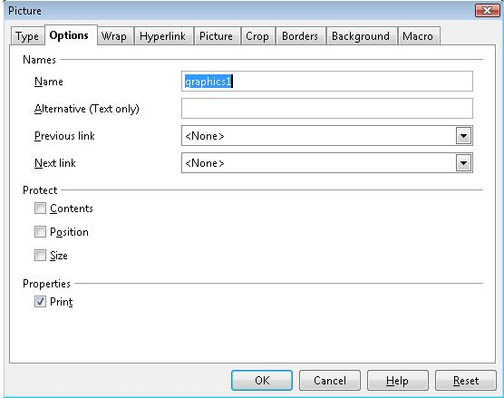

Stosowanie alternatyw tekstowych do obrazów za pomocą wpisu Alt w dokumentach PDF
ID: PDF1
Technologia: pdf
Rodzaj: Technika
Kiedy stosować
Oznakowane dokumenty PDF z obrazami
Opis
Celem tej techniki jest zapewnienie tekstowych alternatyw dla obrazów za pośrednictwem wpisu /Alt na liście właściwości znacznika. Zwykle osiąga się to za pomocą narzędzia do tworzenia plików PDF.
Dokumenty PDF mogą być ulepszone poprzez zapewnienie alternatywnych opisów dla obrazów, formuł i innych elementów, które nie są naturalnie tłumaczone na tekst. W rzeczywistości, takie alternatywne teksty są wymagane dla dostępności: alternatywne opisy są tekstem czytelnym dla człowieka, który może być głosowo odtwarzany przez technologię tekst-na-mowę dla dobra użytkowników z niepełnosprawnością wzroku.
Jeśli obraz zawiera słowa, które są ważne dla zrozumienia treści, tekst alternatywny powinien zawierać te słowa. Dzięki temu alternatywa będzie dokładnie przedstawiać obraz. Należy pamiętać, że tekst alternatywy nie musi opisywać wizualnych cech samego obrazu, ale musi przekazywać to samo znaczenie co obraz.
Przykłady
Dodawanie wpisu /Alt do obrazu za pomocą narzędzia TouchUp Object Tool programu Adobe Acrobat 9 Pro
Ten przykład odnosi się do programu Adobe Acrobat Pro. Istnieją inne narzędzia programowe, które wykonują podobne funkcje. Zobacz listę innych narzędzi programowych w .
Wybierz Narzędzia > Edycja zaawansowana > TouchUp Object Tool
The TouchUp Object Tool w menu Edycja zaawansowana.
Uzyskaj dostęp do menu kontekstowego obrazu i wybierz Właściwości.
W oknie dialogowym Właściwości retuszu wybierz kartę Znacznik.
W panelu Znacznik wpisz alternatywny tekst w polu tekstowym Tekst alternatywny.
Karta Znacznik w oknie dialogowym Właściwości TouchUp.
Dodawanie wpisu /Alt do obrazu za pomocą narzędzia TouchUp Reading Order w programie Adobe Acrobat 9 Pro
Ten przykład pokazano w programie Adobe Acrobat Pro. Istnieją inne narzędzia programowe, które wykonują podobne funkcje. Zobacz listę innych narzędzi programowych w .
Wybierz Narzędzia > Edycja zaawansowana > Narzędzie poprawiania kolejności czytania
The TouchUp Reading Order Tool in the Advanced Editing menu.
Zostanie wyświetlone okno dialogowe Retusz kolejności czytania.
Kliknij obraz prawym przyciskiem myszy i wybierz opcję Edytuj tekst alternatywny.
Wpisz alternatywny tekst w polu tekstowym Tekst alternatywny.
Type the text alternative in the Alternate Text text box.

Pole Tekst alternatywny.
Dodawanie wpisu /Alt do obrazu w dokumentach PDF generowanych za pomocą programu Microsoft Word
Ten przykład jest pokazany z programem Microsoft Word. Istnieją inne narzędzia programowe, które wykonują podobne funkcje. Zobacz listę innych narzędzi programowych w .
Word 2000-2003
Kliknij obraz prawym przyciskiem myszy i wybierz Formatuj obraz
Wybierz kartę Internet
Wpisz tekst alternatywny w odpowiednim polu tekstowym, a następnie kliknij przycisk OK.

Karta Internet w oknie dialogowym Formatowanie obrazu.
Word 2007
Kliknij obraz prawym przyciskiem myszy i wybierz Rozmiar
Wybierz kartę Tekst alternatywny
Wpisz tekst alternatywny w odpowiednim polu tekstowym, a następnie kliknij przycisk OK.
Karta Tekst alternatywny w oknie dialogowym Rozmiar.
Dodawanie wpisu /Alt do obrazu w dokumentach PDF generowanych za pomocą OpenOffice.org Writer 2.2
Ten przykład jest pokazany z programem Open Office.org Writer. Istnieją inne narzędzia programowe, które wykonują podobne funkcje. Zobacz listę innych narzędzi programowych w .
Wejdź do menu kontekstowego obrazu i wybierz Obraz...
Wybierz kartę Opcje
Wpisz tekst alternatywny w polu tekstowym Alternatywny (tylko tekst) i kliknij OK.

Karta Opcje w oknie dialogowym Obraz.
Dodawanie tekstu alternatywnego do obrazu w dokumencie PDF za pomocą wpisu /Alt
Właściwość /Alt używana na obrazie gór z księżycem i drzewami byłaby zazwyczaj używana w następujący sposób (zwykle wykonywana przez narzędzie autorskie):
/Figure <</Alt Szkic gór z księżycem wschodzącym nad drzewami) >>
Obraz może być również reprezentowany przez znacznik o innej nazwie. Inna nazwa może być użyta, ponieważ nazwa znacznika jest napisana w języku innym niż angielski lub ponieważ określone narzędzie używa innej nazwy z innego powodu. W tej sytuacji konieczne jest również, aby RoleMap zawarta w StructTreeRoot dla dokumentu PDF zawierała wpis, który jednoznacznie odwzorowuje nazwę znacznika użytego dla obrazu ze standardowym typem struktury używanym w dokumentach PDF (w tym przypadku Figure). Gdyby RoleMap zawierała tylko wpis mapujący znaczniki Shape na znaczniki Figure, informacja o RoleMap wyglądałaby następująco:
/RoleMap << /Shape /Figure >>
W takim przypadku prawidłowe byłoby również użycie wpisu /Alt w następujący sposób:
/Shape <</Alt (Jezioro Kraterowe latem, z błękitnym niebem, chmurami i ścianami krateru doskonale odbijającymi się w jeziorze) >>
Należy pamiętać, że wpis /Alt na listach właściwości można łączyć z innymi wpisami.
Testy
Procedura
Dla wszystkich obrazów, które wymagają odpowiedników:
Sprawdź, czy obrazy mają wpisy /Alt w znaczniku osadzającym, wykonując jedną z następujących czynności:
Przeczytaj dokument PDF za pomocą czytnika ekranu, słuchając, jak odczytywany jest równoważny tekst, gdy przechodzisz tabulatorem do obiektu nietekstowego (jeśli można go zapisywać) lub słuchając tekstu alternatywnego podczas czytania treści wiersz po wierszu.
Korzystając z edytora PDF, sprawdź, czy tekst alternatywny jest wyświetlany dla każdego obrazu.
Użyj narzędzia, które może wyświetlać wartość wpisu /Alt, takiego jak aDesigner, aby otworzyć dokument PDF i wyświetlić podsumowanie GUI, aby przeczytać tekstowe alternatywy dla obrazów.
Użyj narzędzia, które udostępnia dokument za pośrednictwem interfejsu API dostępności i sprawdź, czy obrazy mają wymagane odpowiedniki tekstowe.
Oczekiwane wyniki
Test 1: zaliczony, jeśli, obrazy mają wpisy /Alt w znacznikach osadzających.